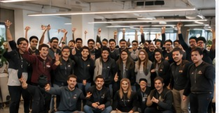

Community
A founder network guided by AI insights.
Snoubolr aims to create communities where founders can share projects, receive feedback, and discover relevant collaborators based on real project similarity.


AI Builders
Discuss AI products, agents, automation, analytics, and cloud infrastructure.

SaaS Founders
Share MVP progress, user feedback, landing pages, pricing ideas, and growth experiments.
Product Makers
Connect with designers, developers, and creators working on early-stage products.
Feedback Groups
Use community conversations as input for AI-powered project improvement.